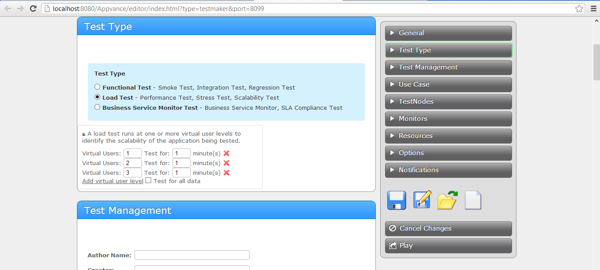

This
article shows how to build, operate, and learn the results from a test
of a Web application very quickly using HTTP
Archive (HAR) technology.
Appvance PerformanceCloud(APC) uses HAR to surface functional issues, load and performance
bottlenecks, and surface Web application delivery SLA compliance
issues. HAR is a simple file notation to identify the resources
a browser uses to display a Web page. HAR files first appeared in the
Firebug debugger utility for the
Firefox browser. HAR is now supported in
Internet Explorer (IE 9) and
many other tools.
APC automates a HAR file for a Web page as a functional test,
load and performance test, and production monitor. Create a HAR file
using the popular Firebug debugger utility for Firefox, or another
HAR supporting tool. APC
operates an HTTP protocol-level test using the HAR file as input to a
test. APC loads the resources for a Web page just as the browser
does, in pools of concurrently running HTTP protocol connections.
APC shows the test operation - including drill-down on how long
each resource in the page takes to load - using the APC Results
Analysis charting and reporting engine.
Note: Find all of the code and data described in this article in
tutorials/HAR_Tutorial
Benefits
APC repurposes HAR files as functional tests
(regression tests, smoke tests, integration tests,) load and
performance tests, and production monitors. The HAR ScriptRunner in
APC loads the resources defined in a HAR file just as a browser
does. The HAR support in APC delivers these benefits:
- The fastest way to create and run an HTTP protocol-level tests of
Web applications. No test coding, scripting, or programming.
- Highly scalable play-back to thousdands-of-virtual-users per
TestNode
- Data-driven HAR tests using CSV and RDBMS query data
- Operates just like a browser to test your network connectivity
and Web server
- APC repurposes HAR files to be functional tests (regression
test, smoke test, integration test,) load and performance tests, and
production monitors
Limitations
The HAR ScriptRunner is not appropriate for tests of Rich Internet
Applications (RIA, using Ajax, Flex, Flash.) The HAR ScriptRunner
operates at an HTTP protocol level. It does not does not operate the
dynamically running Javascript functions in a typical RIA. Instead use
APC's browser-based test technology (Sahi and Selenium
tests running in HtmlUnit, Firefox, IE, Chrome, Safari) for
RIA testing.
Prerequisites
Install the following tools:
Firefox 3.6 or
greater
Firebug 1.6 or greater
NetExport
0.7 or greater
You may also accomplish the tests in this tutorial using IE 9 and APC. See this
article for details.
How It Works
When a browser opens a Web page it initiates a complicated set of
network protocols to load the HTML of the page and any supporting
resources, including style sheets (CSS,) images, sound files,
Flex/Flash components, and media
files. The Firebug Net panel shows the time it takes and the order to
load the resources.
0
The browser has a connection pool mechanism to load groups of resources
concurrently. Most browsers have 10 resource loader by default. The
browser opens 10 network socket connections to the Web server. Each
connection loads a resource concurrently to the other socket
connections. Once a resource loads, the browser uses the resource
loader to get the next resource.
Firebug shows us a timeline to load these
resources in the Net tab. The following chart shows the browser loading
the HTML of the page. The browser parses the page into a
Document Object Model (DOM.) Then it loads the resources, in this case
the browser gets the BrewBiz_Header.png image. As each resource loads,
the
browser loads the next resource.

Clicking the Export button creates an HTTP Archive (HAR) formatted
file. The file
contains a list resources the browser loads, the duration of time
to load the resource, and the sequence the resource loads. HAR
is useful to optimize the page loading time of your Web
application.
APC uses the HAR file in the following ways:
- APC duplicates the browser behavior by loading the
resources
defined in a HAR file. APC supports cookies and browser caching.
- APC's HAR ScriptRunner provides browser
connection pooling to load groups of resources concurrently. APC
defaults to 10 concurrent connections.
- APC
tracks the time to load each resource as a step in a transaction and
the success or failure to load the resource. APC reports the
performance of the Web application in a set of graphic charts.
- APC replaces values in the HAR file from Data Production
Library
(DPL) sources, including comma separated value (CSV) and relational
database (RDBMS) queries.
- APC's HAR ScriptRunner operates the test at the HTTP
protocol level efficiently. Since the ScriptRunner does not
process the HTML, CSS, or Javascript (as the other Sahi Htmlunit and
Selenium Htmlunit ScriptRunners do) the HAR ScriptRunner runs up to
thousands of virtual users per TestNode.
- APC repurposes HAR files to be functional tests (regression
test, smoke test, integration test,) load and performance tests, and
production monitors.
- APC uses HAR files without any test coding, scripting, or
programming.
Tasks
Our
challenge in
this tutorial is to build a test of a Web application. The
tutorial will show how to use the test for regression and smoke
testing.
Then the tutorial will repurpose the test as a load and performance
test and business service monitor.
- Create A Functional Test
- Make This A Data-Driven Test
- Make This A Load and Performance Test
- Monitor The Web Application for SLA
Compliance
1. Create a Functional Test
In
this task we will create a functional test of the BrewBizWeb tutorial
Web application example. We chose this tutorial application because
BrewBizWeb has no JavaScript requirements. Everything is HTML, forms,
images, and text.
- Open Firefox. Open the Firebug add-on from the Tools drop-down
menu. Navigate to http://:8080/BrewBizWeb/login.html
- In the Firebug panel click the Net tab. You may need to reload
the page to active the Net tab contents.
- Click Export, Save As... Name the file login.har. Click the
Save button.
- Start APC. Create a new functional test in APC. Use
Scenario Builder from the Start Screen. This opens the
APC Scenario Builder automatically.
- Click the Use Cases button in the Scenario Builder. Choose the HAR entry in
the Test Type pop-up menu.
- Click the Browse button in the Resource field. Choose the
login.har file you created in Step 3.
- Enter myinstance in the Instance field.
- Click the Play icon and view the results. APC shows the transaction time to process the entire HAR
file and step times for each resource loaded. A check mark indicates
successful loading of a resource.
- To add additional Web pages to the test, repeat steps 1-3. Save a
new HAR file for each additional page. In the Scneario Builder's Use Case tab,
click Add Test and add additional steps for each HAR file. Set the
Instance value to myInstance to enable caching of Web page resources
among the operation of all the test steps.
- Click the Run button to see the results.
Options
The HAR ScripRunner features two optional values. Set these in the
Options tab of the Scenario Builder:
- Connection pool size - Controls the number of concurrent
resources to load. Most browsers use a value of 10.
- Failure tollerance level - Identifies the number of resource
loads that fail before APC identifies the entire HAR test step a
failure.
2. Make This A Data-Driven Test
Task 2 enhances
the
functional test to use
a Data
Production Library (DPL.) The DPL reads data from a comma
separated value (CSV) flat file. The values provide input to the test
and validation values, including sign-in and password values in the
log-in page.
- Create a
Comma-Separated-Value file. Use your favorite text
editor or spreadsheet program. Name the file data.csv. The contents
must be in the following form.
A
quick explanation:
The first row of the data file contains data mapping names. When
APC finds a mapping name in the HAR file it replaces with the
corresponding value from the csv file. The DPL replaces any value,
including URLs, form values, and text.
- Connect the Data Production
Library (DPL) to the HAR
test in the Scenario Builder. Open HAR_Functional_Test.scenario in
the
Scenario Builder. Click the Use Cases tab.
- Click the Add DPL link in the Login Step.
- Set
the DPL type to HashDPL. HashDPL reads data from a comma separated
value (CSV) file and provides it at test run time to the ScriptRunner.
- Set the Action pop-up menu to Get Next Row of Data.
- Click Browse and select the data.csv file.
- By default APC runs
the use case in a Functional Test once and uses the first row of data
in the CSV file only. Click the General tab and select the "Repeat for
all data" checkbox to repeat the Functional Test for all rows of data
in the data.csv file.

- Click the Play button and view the results. APC operates the Use Case for each row of data in the data.csv
file.
3. Make This A Load and Performance Test
A common
goal of testing is to learn how your Web application performs under the
load of many virtual users. Load and performance testing are useful in
the following ways:
- Shows what you can expect the end-user experience to be at
various levels of concurrently running users.
- Shows how your Web application falls-apart under too much
load.
- Surfaces performance bottlenecks and functional issues that only
happen under the load of many users.
APC puts this knowledge into your hands by delivering a
Scalability Index of your Web application. A Scalability Index shows
the throughput of your Web application measured at the client side at
increasing levels of concurrently running virtual users. The
Scalability Index demonstrates how close to linear scalability is your
Web application. The goal of any
application is linear scalability: performance should remain constant
as more users appear.
- In the APC window use
the Play Button from the Start Screen; Browse command. Use the file selector to
choose HAR_Tutorial/HAR_Load_Test.scenario
- Click the Edit icon in the
TestScenario Controller panel.
- Set the test to be a load
test in the General tab.

- Add 3 virtual user levels to the test. Set the virtual users
levels to 1, 2, 3.
Appvance operates the
test use case for 1 minute in 1 concurrently running
simulated
users, then 2 users, then 3 users. The Real Time Scalability Index
contrasts the throughput of the application - how many times it can run
the test use case in the given test time - measured as Transactions Per
Second (TPS) for each of the three user
levels. A perfectly scalable system will increase TPS in linear
proportion to the increase in users. For example, at 2 users doing 0.03
TPS a 4 user level should be twice the TPS, or 0.06 or higher.
APC's console shows the actual application throughput on top of
what
ideal application throughput with linear
scalability.
See the Results Analysis chapter of the APC User Guide for
explanation of the thousands of additional charts to identify the root
cause of a performance bottleneck.
- Click the Play button and view the results.
4. Monitor The Web Application for SLA
Compliance
Business
Service Monitor (BSM) testing enforces and proves a Service Level
Agreement (SLA) by operating a test periodically. For example, a
monitor runs a test every 30 minutes. APC reuses functional
tests as a monitor with no changes to the HAR test use case.
- In the APC window use
the Play Button from the Start Screen -> Browse command. Use the file selector to
choose HAR_Tutorial/HAR_Monitor_Test.scenario
- With the General tab selected, choose Production Monitor and
enter 30 into the Monitor every field.
- Click the Play button and view the results.
Monitor tests run periodically as a single virtual user. APC
displays the results to the Controller window. APC logs the
results to the log repository for historical proof that the Web
application performed as expected.
- Click the Notifications tab. Use the Notifications tab to have APC send an announcement email
for when the test starts, stops, and hourly with results.